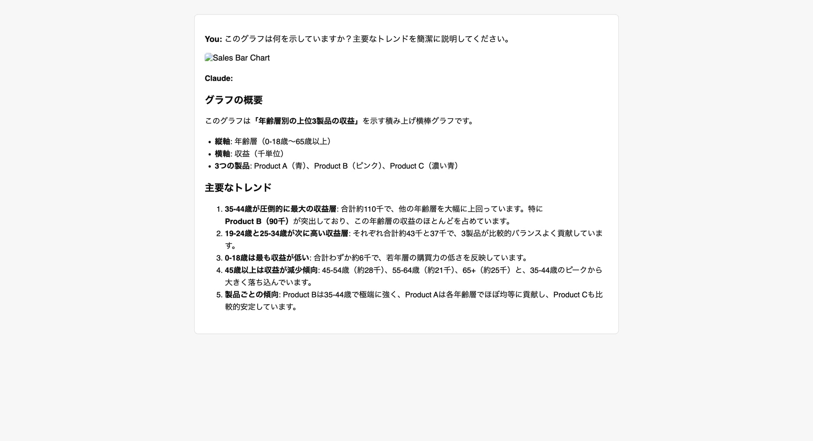
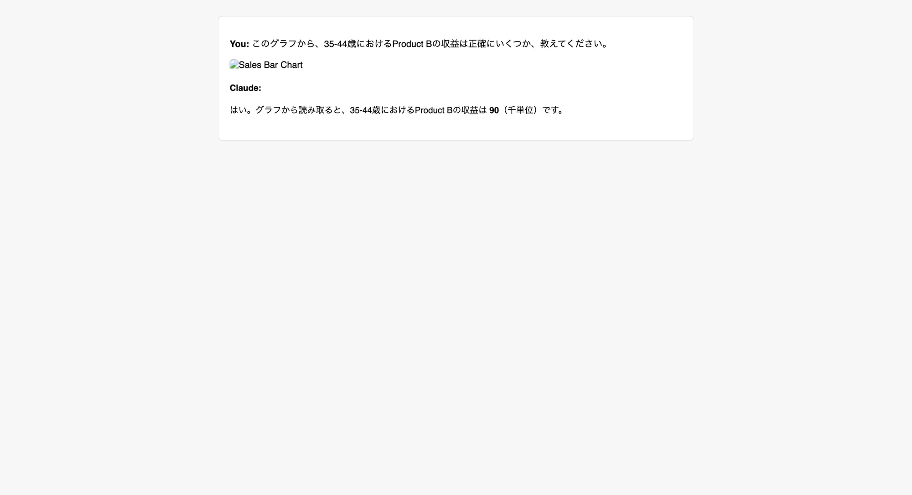

これまでの記事で、Claudeの基本的な使い方、プロンプトのコツ、そして長文読解能力を深く掘り下げてきました。今回は、さらに一歩進んで、Claudeの「画像理解力」に焦点を当てます。
Claudeは、ただ画像を認識するだけでなく、画像に含まれるテキスト、図、グラフ、さらには複雑なレイアウトまでを理解し、そこから具体的なインサイトを抽出する能力を持っています。
Claudeの画像理解能力とは？
Claudeの画像理解能力は、単なる画像認識を超えたものです。
- 画像内のテキスト抽出（OCR）： 画像に含まれる文字を読み取り、テキストデータとして認識します。
- 図形・レイアウトの理解： フローチャートやワイヤーフレームなどの図形や、ウェブページのレイアウトなどを理解し、その構造を把握します。
- グラフ・チャートのデータ分析： 棒グラフ、折れ線グラフ、円グラフなど、さまざまな種類のグラフから数値データを読み取り、傾向や特徴を分析します。
画像からインサイトを抽出する3ステップ
Claudeを使って画像からインサイトを抽出するプロセスは、大きく3つのステップに分けられます。
ステップ1：画像資料のアップロード
まずはClaudeのチャット画面で、分析したい画像ファイルをアップロードします。
ステップ2：画像内容の認識と要約
画像をアップロードしたら、まずは画像に何が描かれているかを認識させ、全体像を要約してもらいましょう。以下の例では、製品の売上を示すグラフをアップロードし、その概要とトレンドを説明するよう指示しています。

画像：Claudeがグラフの概要と主要なトレンドを説明する
このように、Claudeはグラフの種類、縦軸と横軸の意味、そしてデータから読み取れる主要な傾向を正確にテキスト化してくれます。
ステップ3：詳細な質問とデータ抽出
全体像を把握した後は、あなたの知りたい具体的な情報やデータに焦点を当てて質問を深掘りしていきましょう。

画像：Claudeがグラフから特定の数値を正確に抽出する
上の例では、「35-44歳におけるProduct Bの収益」という非常に具体的な質問に対し、Claudeはグラフから「90（千単位）」という数値を正確に読み取っています。これにより、手動でのデータ入力やグラフの読み解きにかかっていた時間を大幅に削減できます。
Claudeをさらに活用するヒント
- 複数画像の比較分析： 複数の類似画像をアップロードし、「これらのグラフから、製品Aと製品Bの市場シェアの推移を比較して、結論を述べてください。」と指示すれば、手間のかかる比較分析も瞬時に行えます。
- プレゼン資料作成の効率化： 手書きのラフな図やメモを画像としてアップロードし、「このアイデアを図式化してください」と指示したり、「このグラフから導かれる結論で、説得力のあるプレゼンテーションスライドのタイトルと構成案を提案してください」と依頼することも可能です。
- デザインレビューの補助： Webサイトのモックアップ画像をアップロードし、「このデザインの改善点をユーザーエクスペリエンスの観点から3点指摘してください」といったレビュー依頼もできます。
まとめと次回予告
今回はClaudeの驚くべき画像理解能力に焦点を当て、図やグラフ、テキストを含む画像から具体的なインサイトを抽出する実践術を学びました。この能力を使いこなすことで、視覚情報の分析にかかる時間と労力を劇的に削減し、より深い洞察を素早く得ることが可能になります。
次回は「Claudeと連携！外部ツールで作業を自動化するComputer Use/Dispatch機能」と題して、Claudeがどのように外部のツールやシステムと連携し、より複雑なタスクを自動化できるのかを深掘りします。いよいよClaudeがあなたのPCを操作し始める「AIエージェント」としての真価に迫ります。
#Claude #AIツール #画像認識 #データ分析 #グラフ